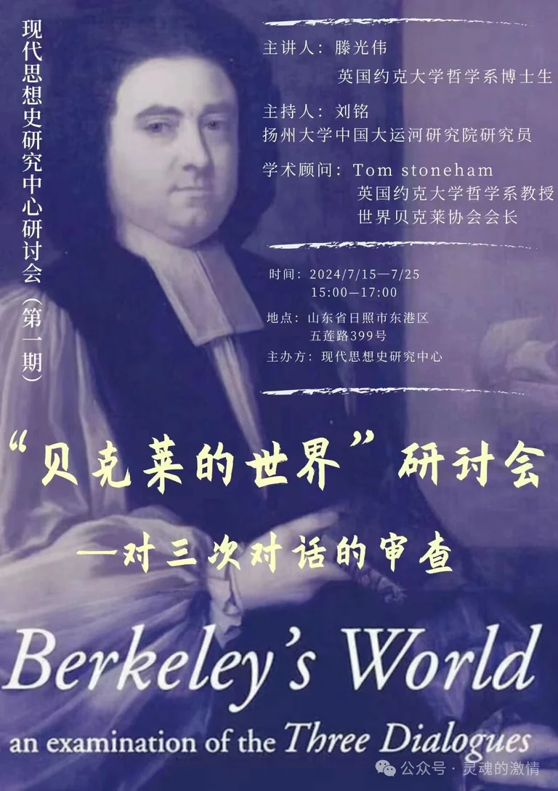

活动概述
本次研讨会围绕汤姆·斯通汉姆（Dr. Tom Stoneham）的《贝克莱的世界》（Berkeley's World）展开，讨论重心集中在贝克莱《三次对话》的文本结构、论证方式及其思想史位置。
主题线索
- 以《Berkeley’s World》为阅读引导，重新进入《三次对话》的问题框架。
- 围绕“知觉、观念与对象”的关系展开文本审查。
- 从贝克莱解释学与近代经验论传统的内部争论切入。
- 连接贝克莱研究、近代经验论传统与当代解释路径。
本次研讨会围绕《Berkeley's World》与贝克莱《三次对话》展开，讨论知觉、观念与对象等核心问题。

本次研讨会围绕汤姆·斯通汉姆（Dr. Tom Stoneham）的《贝克莱的世界》（Berkeley's World）展开，讨论重心集中在贝克莱《三次对话》的文本结构、论证方式及其思想史位置。